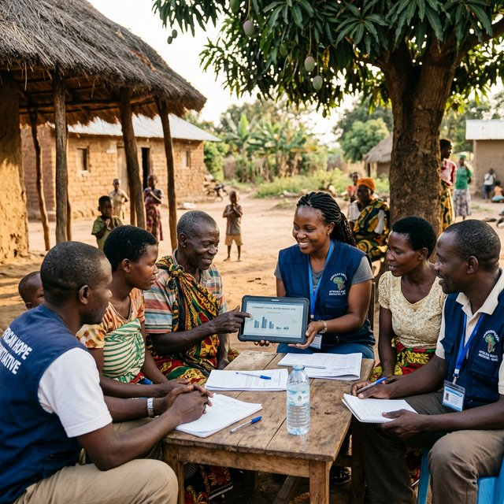

Les multiples organisations non gouvernementales majeures ainsi que les discrètes et actives précieuses associations solidaires travaillent souvent sans relâche aux côtés des plus vulnérables tous les jours très directement sur un terrain réputé complexe avec très malheureusement des précieuses mais souvent trop minces ressources matérielles courantes ou purement financières. Les solutions technologiques très accessibles et robustes que MDS fournit activement permettent fondamentalement à chaque association d'assurer un suivi, des collectes d'informations précises de terrain ainsi qu'un exceptionnel reporting rigoureux, clair, moderne et intelligent pour sans relâche conforter, rassurer et encourager tous ses fidèles et solides et essentiels si chers bailleurs et précieux donateurs sans l'aide et concours desquels rien ne s'accomplit parfaitement ou bien.

Collecte de données terrain, indicateurs ODD, tableaux de bord, cadres logiques UE, AFD, USAID.
Formulaires mobiles sans internet, synchronisation auto, géolocalisation, photos et signatures.
Rapports intermédiaires et finaux aux standards bailleurs, avec données automatiquement intégrées.
Mission, projets, impact, module de dons en ligne, Mobile Money, reçus fiscaux automatiques.
BDD anonymisée, historique suivi bénéficiaires, reçus et remerciements automatisés aux donateurs.